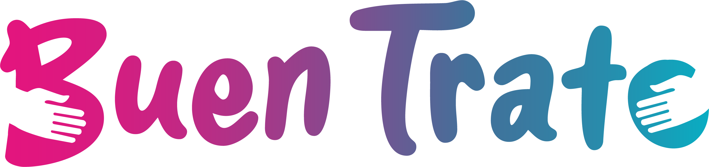

Promoción del Buen Trato
Plataforma de estudio del Cuadernillo Ley 15.348 — lectura completa de los 6 módulos, glosario y trivias de autoevaluación.
Descargar cuadernillo (PDF · 12 MB)📖
Recorrido de lectura
Prólogo + 6 módulos + anexo bibliográfico, con el texto íntegro del cuadernillo.
🎮
Trivias de autoevaluación
10–12 preguntas por módulo. Fallás una, empezás de nuevo. ¡Completá los 6!
Tu progreso
0 de 6 módulos completados · 0 puntos
Prólogo
Módulos
Seis módulos del cuadernillo, con texto completo y trivia asociada a cada uno.
Trivias de autoevaluación
10–12 preguntas por módulo. Una respuesta incorrecta reinicia la trivia del módulo.
Anexos
Anexo bibliográfico del cuadernillo.
📚
Anexo bibliográfico
Referencias por módulo del cuadernillo.
Glosario
Mi Progreso
0
puntos acumulados
0 de 6 módulos completados
🎉
¡Felicitaciones!
Completaste las 6 trivias de la Ley de Promoción del Buen Trato.
600
puntos totales
Descargar el cuadernillo (PDF)